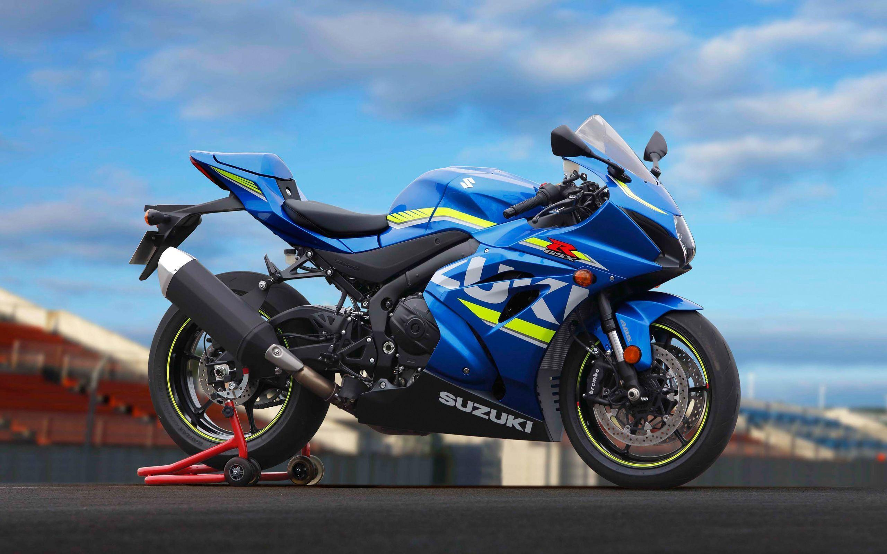
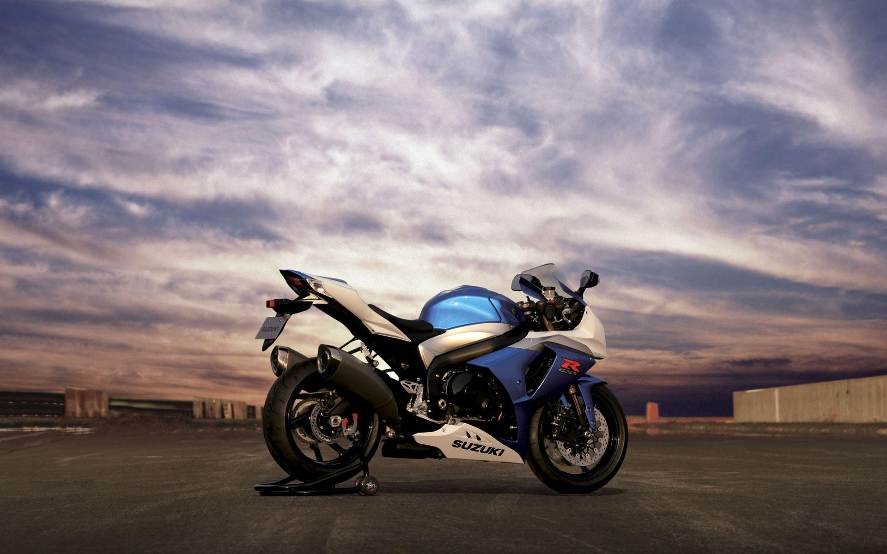
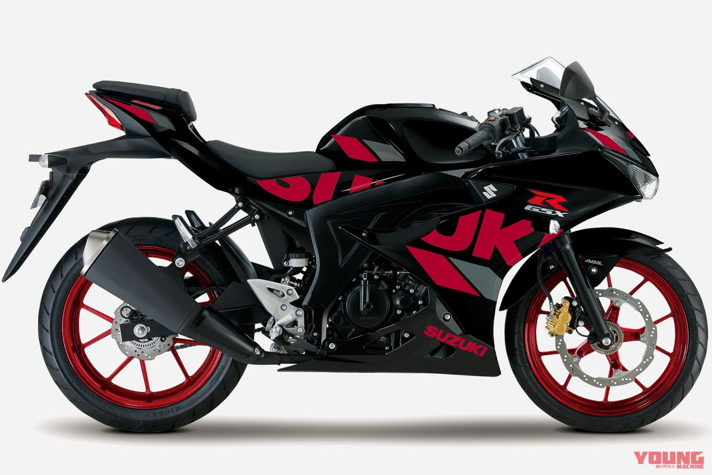
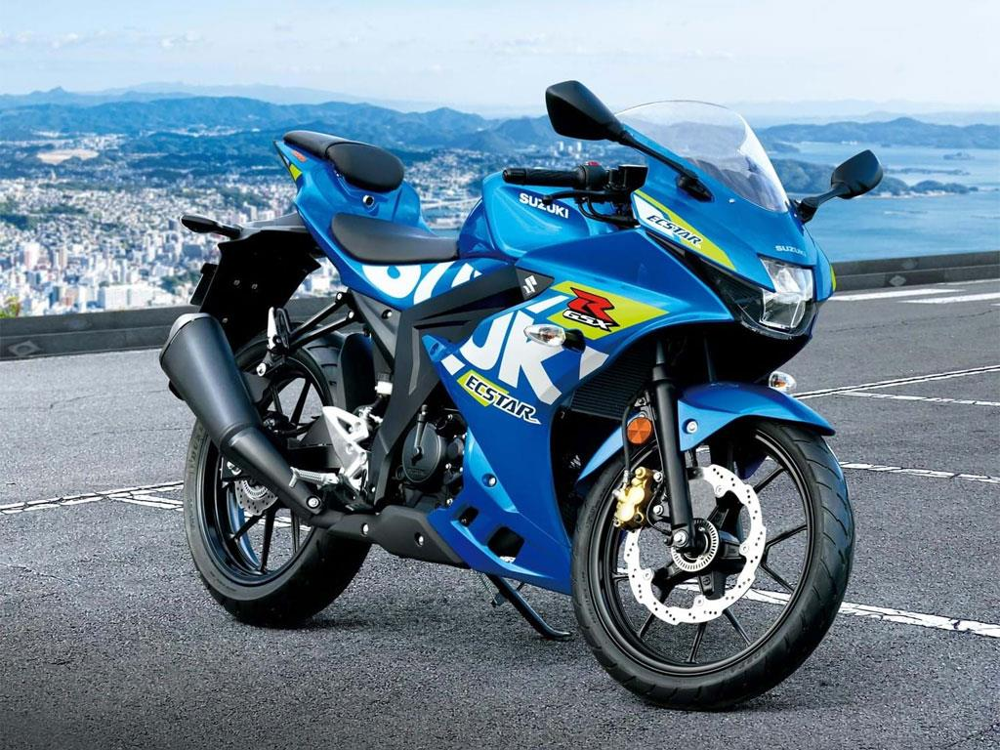
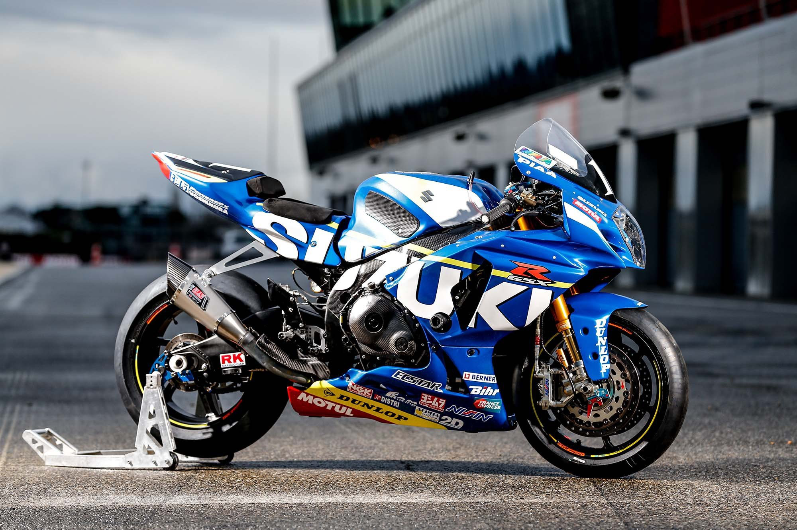
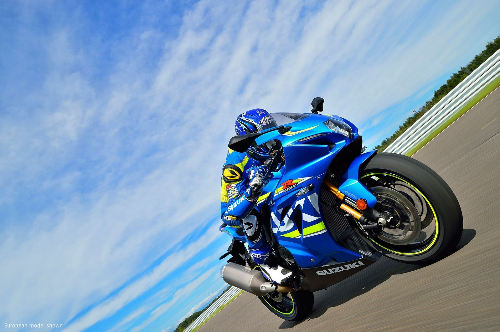

SUZUKI
The Suzuki GSX-R125
Is a sport motorcycle produced by Suzuki as part of the GSX-R series of motorcycles³. It has a liquid-cooled single-cylinder four-stroke engine with an output of 11 kW (15 hp)³. It can be ridden with license class A1 or B196³.

Engine
The GSX-R125’s DOHC engine is a perfect example of how to make a lot of power out of a very efficient and compact power plant¹. This power combines with strong torque and exceptional fuel economy, to create an engine worthy of the GSX-R marque¹.
Performance
The GSX-R125 has the best power-to-weight ratio, torque-to-weight ratio and acceleration, plus nimble handling and great fuel economy in the 125cc class⁵.
Design
The GSX-R125 has an aggressive look and a high-quality finish that reflects the heritage of the GSX-R line². Thanks to wind-tunnel development, the sleek bodywork also enhances the GSX-R125’s easy handling and aerodynamic performance².
Transmission
The GSX-R125 features a quickshifter and autoblipper as standard¹. This standard-equipment system lets you shift up or down without operating the clutch lever while in motion¹.
Electronics
Aiding rideability, usability, and flexibility is a suite of electronic systems that includes a bidirectional quickshifter as standard, three selectable engine power modes, and three selectable traction control settings, plus the ability to disengage the system entirely¹. There’s also Suzuki’s low RPM assist and easy-start function¹.
Price
As of now, the GSX-R125 is available at a starting price of £5,099¹.
The GSX-R125 is an exciting sportbike. It makes top-class power-to-weight ratio and offers the strong acceleration in the lightweight 125cm3 class, with outstanding fuel economy⁴. Above all, it is a Suzuki GSX-R: A motorcycle anybody would be proud to own².